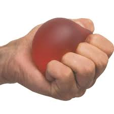
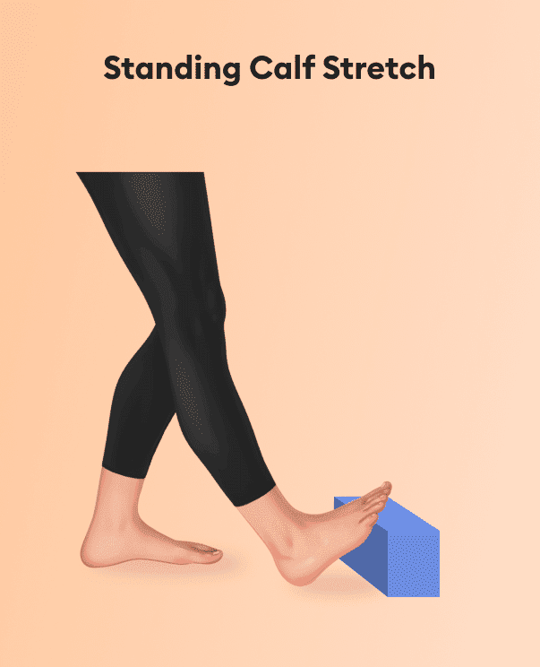

01
Forearm rotation
Passive Forearm Pro/Supination
Restores supination and pronation, so Jackson can turn his palm up to catch and down to dribble.
Three exercises that target the muscles we built on our Maniken, how to do them, and what each one is for.
Restores supination and pronation, so Jackson can turn his palm up to catch and down to dribble.
Restores wrist flexion and extension, working toward 60° and then 75 to 80°.
Restores strength through the full diagonal arc used to rip a rebound or pass across the body.
Gets his wrist bending and straightening back to normal
Jackson rests his forearm flat on a table with his hand hanging over the edge. He slowly bends his wrist down toward the floor, then up toward the ceiling.
This works the flexor carpi ulnaris on the front (anterior) side of the forearm. The goal is to bring his wrist flexion and extension back toward normal limits.
Rebuilds arm strength to support the healing bones
Jackson sits up straight and slowly bends his elbow to bring his hand up toward his shoulder. Then he straightens his arm back down.
This works the brachialis on the front of the upper arm and the medial head of the triceps brachii on the back. The goal is to rebuild arm strength to support his healing elbow and forearm bones.
Keeps his shoulder strong for reaching overhead
Jackson sits upright and slowly raises his straight arm forward to shoulder height, then gently lowers it back down.
This works the deltoid on top of the shoulder. The goal is to keep his shoulder strong so he can eventually reach overhead and play basketball again.



